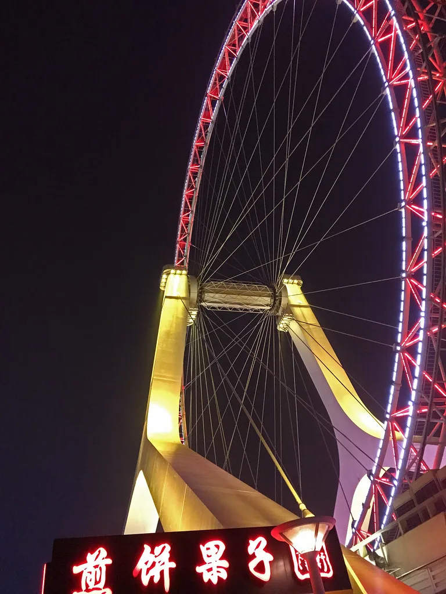
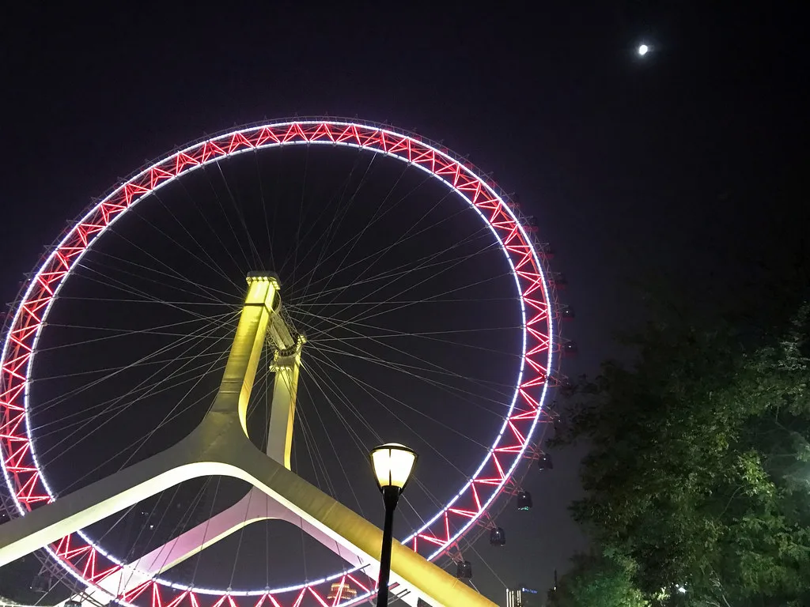
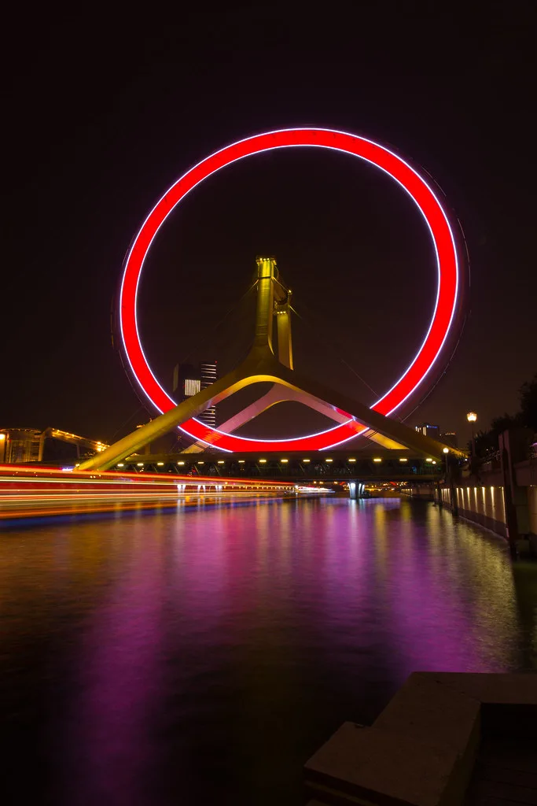
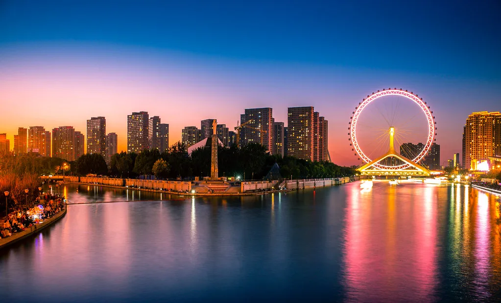
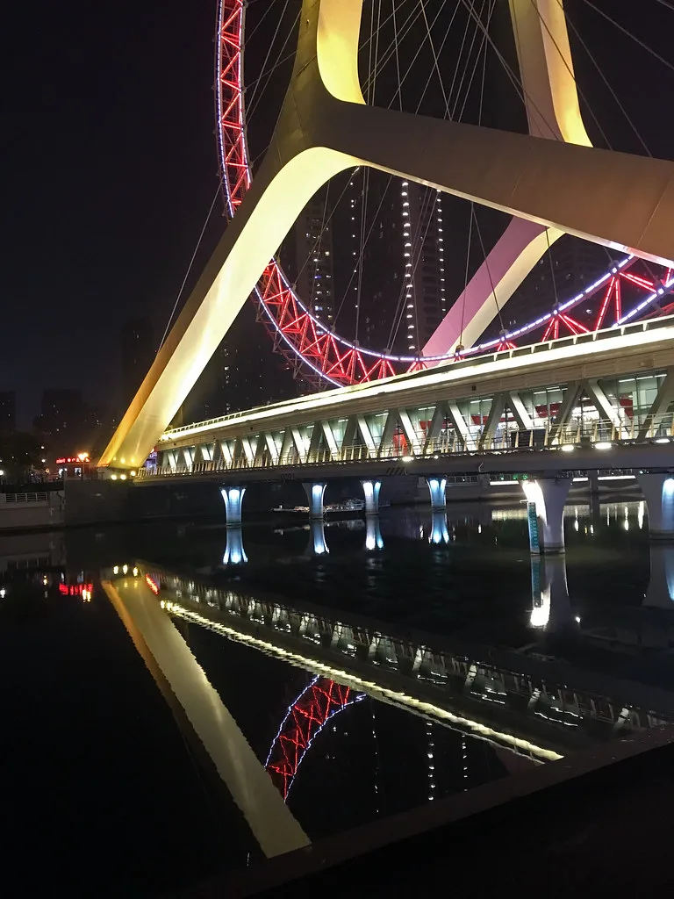
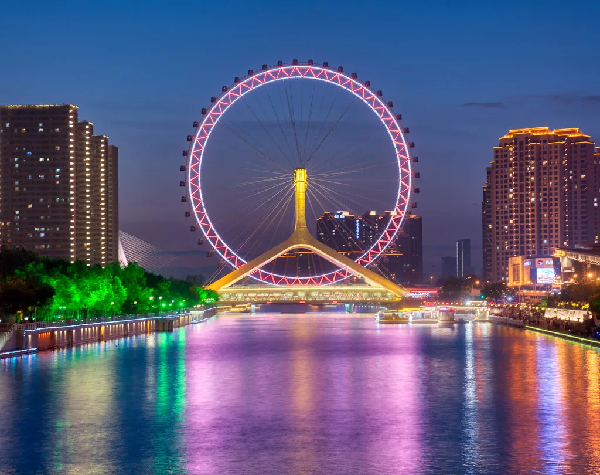
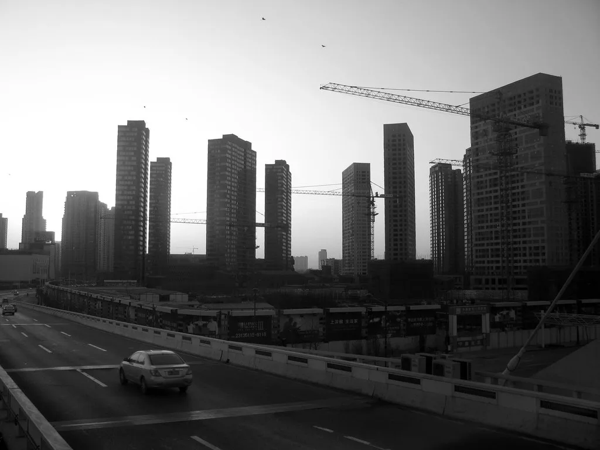
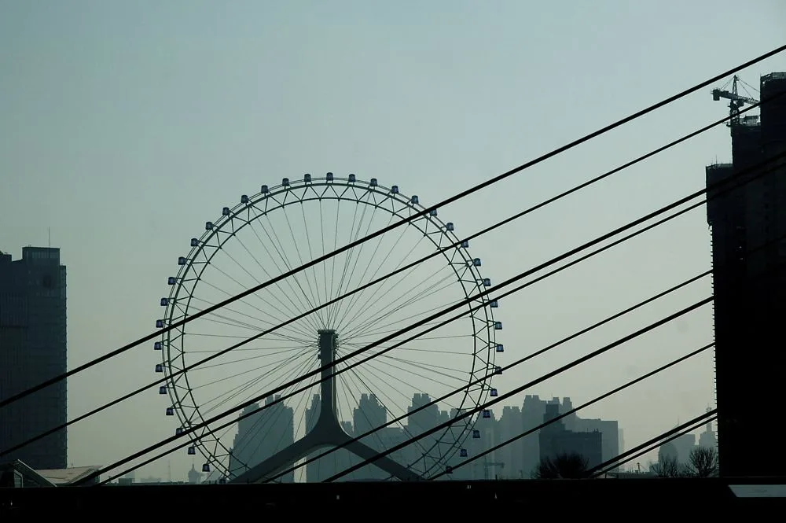

Photo: Wikimedia Commons
Last reviewed: February 2026
Weather & Best Time to Visit
Tianjin Cruise Port Guide
My Visit to Tianjin
I woke before dawn on the morning we arrived in Tianjin, and I stood alone on our stateroom balcony watching the flat coastline of northern China emerge from a violet haze. The air smelled of salt and coal smoke, an unfamiliar combination that told me I was somewhere genuinely far from home. Our ship eased into Tianjin International Cruise Home Port just as the first sunlight caught the cranes along the waterfront, and I felt my pulse quicken. I had waited years for this moment. Beijing — the Great Wall, the Forbidden City, the Temple of Heaven — all of it lay just two hours inland, and I could barely stand still long enough to finish my coffee.
We had booked a ship excursion for the guaranteed return — the distance between Tianjin and Beijing is not something to take chances with when your floating hotel leaves at a fixed time. The coach ride took us through an industrial landscape that gradually softened into farmland, and then the outskirts of Beijing rose around us like a forest of glass and concrete. Our guide, a warm woman named Mei, pointed out landmarks and shared stories about the dynasties that had shaped this land for five thousand years. I listened, but my mind kept drifting to the Wall. I had seen it in photographs my whole life, and now I was going to touch it with my own hands.
We reached Mutianyu by mid-morning. The cable car carried us upward through a canopy of green, and when we stepped out onto the Wall itself, I stopped breathing. The ancient stones stretched away from me in both directions, following the spine of mountain ridges that folded into mist and shadow. Watchtowers stood at intervals like sentinels, their grey walls softened by centuries of wind and rain. I placed my palm flat against the stone and felt it warm beneath my fingers, heated by the morning sun. However weathered by time, every block had been placed by human hands — carried up impossible slopes by workers whose names we will never know. I walked slowly, running my fingers along the rough surface, and I heard the wind singing through the crenellations above me. There was silence up there, a deep and ancient quiet that seemed to swallow the noise of the modern world entirely.
My wife squeezed my hand. "Are you all right?" she asked, and I realized my eyes had filled with tears. I could not explain it properly then, and I am not sure I can now. Standing on something built by millions of hands across centuries, looking out at a landscape that has endured dynasties and revolutions and still stands — something shifted inside me. I whispered a quiet prayer of gratitude for the gift of being there, for the health to climb those steps, for the simple grace of witnessing one of humanity's most astonishing achievements. The Wall taught me that the greatest things are built not by genius but by persistence, by ordinary people who kept laying one stone after another even when they could not see the end.
After the Wall, we visited the Forbidden City. The scale defied comprehension — nine hundred and eighty buildings behind vermilion walls, golden rooftops gleaming under the midday sun, courtyards so vast they seemed to have their own weather. I tasted sweet red bean pastry from a vendor near the Gate of Supreme Harmony, the warm filling dissolving on my tongue. The Temple of Heaven followed, its circular prayer hall rising toward the sky with a mathematical perfection that made me dizzy. But despite the grandeur of Beijing, I found myself thinking about the workers on the Wall, their silent devotion echoing across the centuries.
On our second call at Tianjin — our itinerary brought us back three days later — I chose to stay in the city itself rather than return to Beijing. It was a decision I nearly regretted at first, yet it became one of the finest port days of the entire voyage. The Italian Quarter surprised me completely. European-style colonnades lined cobblestone streets, and I watched elderly men playing chess beneath arched doorways while the smell of fresh jianbing — crispy egg crepes with scallion and chili sauce — drifted from a street cart. I bought one for about ¥8, roughly one dollar, and ate it standing on the corner, the warm savoury flavour mixing with the cool autumn air on my face.
Ancient Culture Street felt like stepping through a doorway into another century. Carved wooden facades lined the pedestrian lane, and I watched an artisan mould a clay figurine of a dragon with fingers so quick and sure it seemed like magic. The Porcelain House, covered entirely in fragments of ancient pottery and porcelain, was unlike anything I had ever seen — a building wearing its history on its skin. Along the Hai River that evening, the water caught the reflection of illuminated bridges and old European bank buildings, and I sat on a bench and listened to the quiet lapping of waves against stone. A street musician nearby was playing an erhu, the two-stringed fiddle whose sound is equal parts beauty and sorrow, and the melody drifted across the water like smoke.
Looking back, I realize what Tianjin taught me. The Great Wall showed me the value of persistence and devotion — ordinary people building something eternal, one stone at a time. But Tianjin itself showed me the value of staying when everyone else leaves. The Italian Quarter, Ancient Culture Street, the Porcelain House, the Hai River at dusk — these are not lesser experiences. They are quieter ones, and sometimes the quieter gifts are the ones that change you most. I learned that the finest port days are not always the ones with the grandest itinerary. Sometimes they are the ones where you slow down, buy a jianbing from a street cart, and listen to an erhu player beside a river as the sun goes down. We sailed from Tianjin in the evening, and as the lights of the port faded behind us, I felt something I can only call gratitude — deep and wordless and warm — for a place that had shown me both the weight of history and the lightness of an afternoon spent simply being present.
Featured Images
The Cruise Port
What you need to know before you dock.
- Terminal: Tianjin International Cruise Home Port — modern terminal opened in 2010 with immigration facilities, Wi-Fi, ATMs, a tourist information desk, and basic shops. The terminal building is wheelchair accessible with ramps, lifts, and level boarding areas for guests with mobility needs. Expect thorough immigration processing with passport checks and occasional bag screening.
- Distance to Beijing: Approximately 170 km (2-2.5 hours by coach, 30-35 minutes by bullet train from Tianjin Railway Station). The cost of a bullet train ticket is approximately ¥55 (about $8). Most passengers book organized ship excursions for the guaranteed return to the vessel.
- Tender: No — ships dock directly at the pier
- Currency: Chinese Yuan Renminbi (CNY/¥); credit cards accepted at major hotels and stores; cash preferred at markets and street vendors; ATMs at port
- Language: Mandarin Chinese (English limited outside tourist areas and major hotels)
- Best Season: April-May and September-October for mild temperatures and clear skies at the Great Wall
- Time Zone: China Standard Time (CST, UTC+8)
- Visa: Many cruise passengers qualify for China's 144-hour visa-free transit policy for the Beijing-Tianjin-Hebei region; verify eligibility based on your nationality before arrival
Getting Around
Transportation tips for cruise visitors.
- Ship Excursions: The most popular and practical option for reaching Beijing and the Great Wall. Organized tours handle all logistics — coach transportation, English-speaking guide, entrance fees, lunch, and guaranteed return to the ship before departure. Full-day Beijing excursions typically cost $150-250 per person. This is the recommended approach for first-time visitors given the distance involved and the language barrier.
- Bullet Train: China's high-speed rail connects Tianjin Railway Station to Beijing South Station in about 30-35 minutes, with trains departing every 15-20 minutes. The fare is approximately ¥55 ($8) each way. However, getting from the cruise port to Tianjin Railway Station takes 30-40 minutes by taxi (approximately ¥80-100, about $12-15), and navigating the Beijing subway independently requires confidence and a translation app. This option suits experienced independent travelers.
- Taxis: Metered taxis are available outside the terminal. Fares within Tianjin city are reasonable — expect ¥80-120 ($12-18) to reach the Italian Quarter or Ancient Culture Street. Have your destination written in Chinese characters, as most drivers do not speak English. Always confirm the meter is running.
- Private Drivers: Book ahead through your cruise line or reputable agencies. A private car with English-speaking driver and guide for a full day in Beijing costs approximately $200-350 for up to four passengers. This option provides flexibility and is more affordable per person for families or small groups than individual ship excursion tickets.
- Walking in Tianjin: If staying in the city, the Italian Quarter and Hai River promenade are pleasant walking areas with smooth, flat sidewalks accessible for wheelchair users. Ancient Culture Street is a compact pedestrian zone. The main tourist areas are spread across several kilometres, so taxis between them are practical.
Tianjin Area Map
Explore Tianjin's cruise terminal, train connections to Beijing, Italian Quarter, Ancient Culture Street, and cultural sites. Click markers for details and directions.
Excursions & Activities
How to spend your time ashore. For popular destinations like the Great Wall, book ahead during peak season to secure your spot. Many visitors choose ship excursion options for the guaranteed return to the vessel, though independent tours offer more flexibility and often lower cost.
Great Wall of China (Mutianyu Section)
The primary reason most passengers come to Tianjin. Mutianyu is approximately 3-3.5 hours from the port and offers a less crowded alternative to Badaling, with cable cars (¥120 round-trip, about $17) and an optional toboggan ride down. The restored section stretches over 5 km with 23 watchtowers. Book ahead through the ship excursion desk or an independent tour operator to ensure timely return. Full-day tours cost $150-250 per person including transportation, entrance fees, and lunch. Moderate walking required with steep stairs at some sections — not suitable for those with severe mobility limitations, though the cable car reduces the physical demands considerably.
Forbidden City & Tiananmen Square
The vast imperial palace complex spans 72 hectares with 980 buildings and was home to 24 emperors across the Ming and Qing dynasties. Entry costs ¥60 ($8.50) and the palace is largely flat and accessible. Combined with Tiananmen Square, this is a full morning or afternoon. Ship excursion packages that include both the Forbidden City and the Great Wall typically cost $200-280 and fill a very long day — plan for 12-14 hours door to door.
Temple of Heaven
A masterpiece of Ming dynasty architecture where emperors prayed for good harvests. The circular prayer hall rises in three tiers of deep blue glazed tiles. Entry is ¥34 ($5). Often combined with Forbidden City on a Beijing day trip. The park grounds are flat and wheelchair accessible, though the prayer hall itself involves steps.
Tianjin Italian Quarter
For those who prefer to stay in Tianjin — or are returning for a second call — the Italian Quarter offers a surprising slice of European architecture with cobblestone streets, piazzas, and colonnades. Free to explore independently. A pleasant half-day with restaurants, cafes, and photo opportunities. Walking is easy on flat ground, and the area is fully accessible for visitors with mobility needs.
Ancient Culture Street & Porcelain House
Ancient Culture Street is a pedestrian shopping lane showcasing traditional Chinese architecture, folk art, clay figurines, calligraphy, and the Tin Hau Temple. Nearby, the Porcelain House (¥50, about $7) is a private residence covered in over four hundred million pieces of ancient porcelain, crystal, and agate. Book ahead for guided tours that explain the history behind the collection. Allow 2-3 hours for both attractions.
Hai River Evening Walk
If your ship departs late, the Hai River promenade offers a scenic walk past illuminated European-style buildings, ornate bridges, and the Tianjin Eye observation wheel (¥70, about $10). Free to walk independently. Best at sunset and into the evening. The riverside path is smooth and flat, suitable for wheelchair users and those with limited mobility.
Depth Soundings Ashore
Lessons learned the hard way.
- Beijing Distance Reality: The 170 km between Tianjin and Beijing means 4-5 hours of total travel time on a Great Wall day. Leave early, return late, and trust the timing of your organized tour. The distance is exactly why ship excursions exist here — embrace the structure and you will stand on the Great Wall with time to spare and memories for life.
- Translation App: Download a Chinese translation app before arrival. English signage exists at major tourist sites but is sparse elsewhere. Having your hotel or destination written in Chinese characters on your phone will save considerable confusion with taxi drivers.
- Cash Is King: While major Beijing attractions and hotels accept credit cards, street vendors, small restaurants, and Tianjin taxis overwhelmingly prefer cash. Withdraw yuan from the ATM at the cruise terminal before heading out — the exchange rate is typically fair.
- Great Wall Footwear: Wear proper walking shoes with good grip. The stones at Mutianyu are uneven and some sections are steep. Sandals and heels are genuinely dangerous on the Wall's ancient surfaces.
- Tianjin Is Worth Your Time: Do not overlook Tianjin itself. The Italian Quarter, Ancient Culture Street, and Porcelain House are genuinely engaging destinations. If you have already visited Beijing, or if your itinerary gives you two calls here, spending a day in Tianjin is a rewarding alternative.
- Visa Check: Verify your 144-hour visa-free transit eligibility well before your cruise. Not all nationalities qualify, and requirements can change. Your cruise line should provide guidance, but double-checking with official sources is worth the peace of mind.
Photo Gallery







Image Credits
- Hero image: WikiMedia Commons (CC BY-SA)
- tianjin-1.webp, tianjin-2.webp, tianjin-3.webp, tianjin-4.webp: WikiMedia Commons (CC BY-SA)
Frequently Asked Questions
Q: How far is Beijing from Tianjin cruise port?
A: Beijing is approximately 170 km (2-2.5 hours by coach, 30-35 minutes by bullet train from Tianjin Railway Station). Most cruise lines offer organized ship excursions with transportation included at a cost of $150-280 per person depending on itinerary. The fare for the bullet train alone is approximately ¥55 ($8).
Q: Can I visit the Great Wall from Tianjin in one day?
A: Yes — the Mutianyu or Badaling sections are both reachable as full-day excursions from Tianjin. Book a ship excursion or private tour to maximize your time and ensure you return before all-aboard. Expect 12-14 hours total for a Great Wall day trip.
Q: What can I see in Tianjin itself if I don't go to Beijing?
A: Tianjin has the charming Italian Quarter with European architecture, the Five Great Avenues historic district, Ancient Culture Street for traditional crafts and folk art, the remarkable Porcelain House, and the beautiful Hai River promenade. It is a wonderful alternative if you have already visited Beijing or prefer a less intensive port day.
Q: Do I need a visa to visit Tianjin and Beijing?
A: Many cruise passengers qualify for China's 144-hour visa-free transit policy for the Beijing-Tianjin-Hebei region. Check with your cruise line and verify your nationality's eligibility before arrival. Requirements can change, so always confirm with official sources.
Q: Is the Forbidden City accessible for visitors with limited mobility?
A: The Forbidden City grounds are largely flat and the main pathway through the complex is wheelchair accessible. Ramps are available at major halls. However, some secondary halls have steps without ramps. The cruise terminal in Tianjin is also wheelchair accessible with lifts and level boarding.
Q: What should I pack for Tianjin?
A: Essentials include comfortable walking shoes with good grip (especially for the Great Wall), sunscreen, layers for variable weather, a rain jacket, and a translation app on your phone. Spring and autumn days can be warm but evenings cool quickly.
Q: What is the best time of year to visit Tianjin?
A: April-May and September-October offer the mildest weather and clearest skies. Summer (June-August) brings extreme heat and monsoon rains. Winter is bitterly cold. Peak cruise season aligns well with the best weather windows.
Key Facts
- Country
- China
- Region
- Pacific
- Currency
- Chinese Yuan Renminbi (CNY/¥); credit cards accepted at major hotels and stores; cash preferred at markets and street vendors; ATMs at port
- Language
- Mandarin Chinese (English limited outside tourist areas and major hotels)